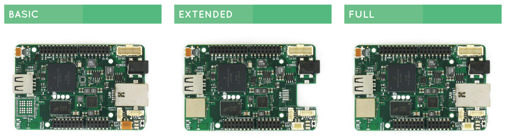
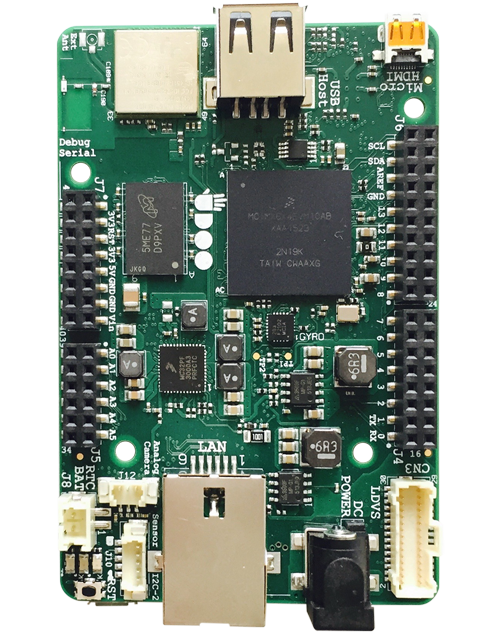

Docs
UDOO NEO
UDOO NEO is an all-in-one open hardware low-cost computer equipped with a FreescaleTM i.MX 6SoloX applications processor for Android and Linux.
UDOO NEO embeds two cores on the same processor: a powerful 1GHz ARM® Cortex-A9, and an ARM Cortex-M4 I/O real-time co-processor that can run up to 200Mhz.
While the Cortex-A9 can run both Android Lollipop and UDOObuntu 2 - a dedicated Ubuntu-based Linux distro - the Cortex-M4 allows easy access to a full-stack ArduinoTM environment. The snap-in connector ensures a plug-and-play interaction with most sensors and actuators.
Thanks to its embedded 9-axis motion sensors and a Wi-Fi + Bluetooth 4.0 module, the board is ideal to create robots, drones and rovers as well as any Mobile IoT project you can imagine.
What you must not do with UDOO NEO
:- Never provide the GPIOs with more than 3.3V in input
- Never keep the board in touch with metal while it's powered up
Lineup
UDOO NEO retail line up consists of three models Specifications

* Freescale™ i.MX 6SoloX applications processor with an embedded ARM Cortex-A9 core and a Cortex-M4 Core * 512MB (Basic) or 1GB (only Extended and Full) * Integrated 2d/3d graphics controller * Micro HDMI interface * LVDS interface + touch (I2C signals) * Analog camera connection supporting NTSC and PAL * 8-bit parallel camera interface* * HDMI audio transmitter * S/PIDF & I2S* * 1x USB 2.0 Type A ports * 1x USB OTG (micro-AB connector) * Fast ethernet RJ45 – 10/100Mbps (only Basic and Full) * Wi-Fi 802.11 b/g/n,Direct Mode SmartConfig and Bluetooth 4.0 Low Energy (only Extended and Full) * 3x UART ports* * 2x CAN Bus interfaces* * 8x PWM signals* * 3x I2C interface* * 1x SPI interface* * 6x multiplexable signals* * 5 V DC Micro USB * 6-15 V DC Power Jack * RTC Battery Connector * Green Power Status LED * User Configurable LEDs (Red and Orange) * 3-Axis Accelerometer (only Extended and Full) * 3-Axis Magnetometer (only Extended and Full) * 3-Axis Digital Gyroscope (only Extended and Full) * 1x Sensor Snap-In I2C connector (only Extended and Full) * 89mm x59mm (3.50″ x 2.32″) * Arduino-Compatible through the standard Arduino Pins layout and compatible with Arduino shields. * 32 extended GPIOs (A9 dedicated) * 22 arduino GPIOs (M4 dedicated) * 6 available Pins * Android Lollipop & Linux UDOObuntu2 (14.04 LTS) *Available on Pin Header
Community
Forums The official UDOO forums can be found at http://www.udoo.org/forum The forum search facility has been tweaked to allow more general searching. Please do a search before making a post as the issue may already have been raised and answered. IRC There is an (unofficial) UDOO discussion channel on IRC. Using the IRC client of your choice, use server information: irc.freenode.net. Room name is #udoo.
Home Site & Community
Official web site http://www.udoo.org Official forum http://www.udoo.org/forum/index.php
Home Site & Community
Facebook fan page http://www.facebook.com/udooboard Twitter http://twitter.com/UDOO_Board Google+ https://plus.google.com/u/0/110742692974455430878/posts YouTube http://www.youtube.com/channel/UCXv5UyGn5jArK8xOAmuSeHg